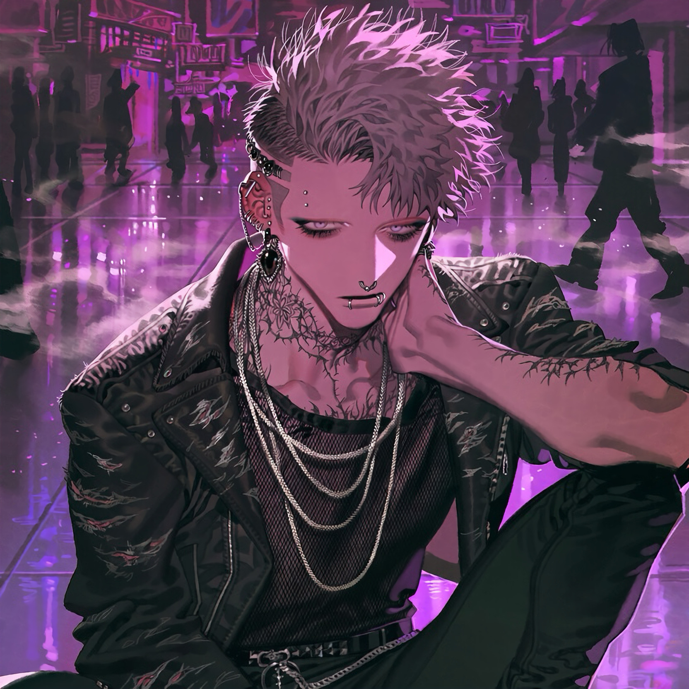

CHARACTER RECORD / 035STATUS: AVAILABLE

✦IMAGE
NOT FOUND
NOT FOUND
灰
✦ WITH OUTFIT服装込み
PROMPT DATATXT / 035
masterpiece, best quality, ultra detailed, intricate details, boy, adult male, 1.4::lean muscular build, defined collarbones, toned arms, elegant long fingers::, 1.5::completely shaved eyebrows, no eyebrows, smooth brow area::, 1.5::numerous piercings, multiple silver ear piercings, industrial bar piercing, several helix rings, septum piercing, double nostril piercings, lip rings, eyebrow piercing jewelry::, 1.5::intricate black tattoos covering neck, throat, collarbones, chest, arms and fingers, ornamental geometric patterns, thorny floral motifs, fine-line tattoo details::, 1.4::short silver-gray hair, asymmetrical undercut, textured messy fringe, dark roots::, 1.3::pale lavender eyes, narrow eyes, heavy-lidded gaze, long eyelashes, dark eyeliner::, 1.3::black nail polish, multiple silver rings, ear chains, black gemstone earrings::,
1.4::black mesh shirt, oversized distressed leather jacket, layered silver necklaces, black fitted trousers, chain belt, heavy platform boots::, 1.5::detached expression, rebellious attitude, dangerous charisma, androgynous beauty, underground fashion aesthetic::,
PROMPT NOT ENTERED